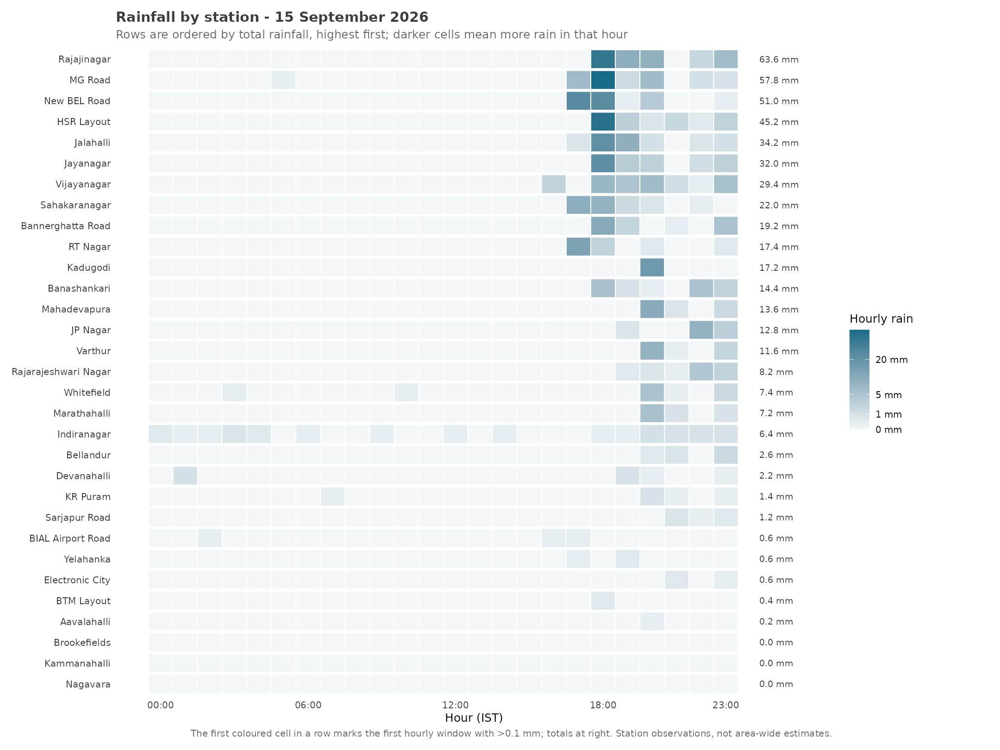
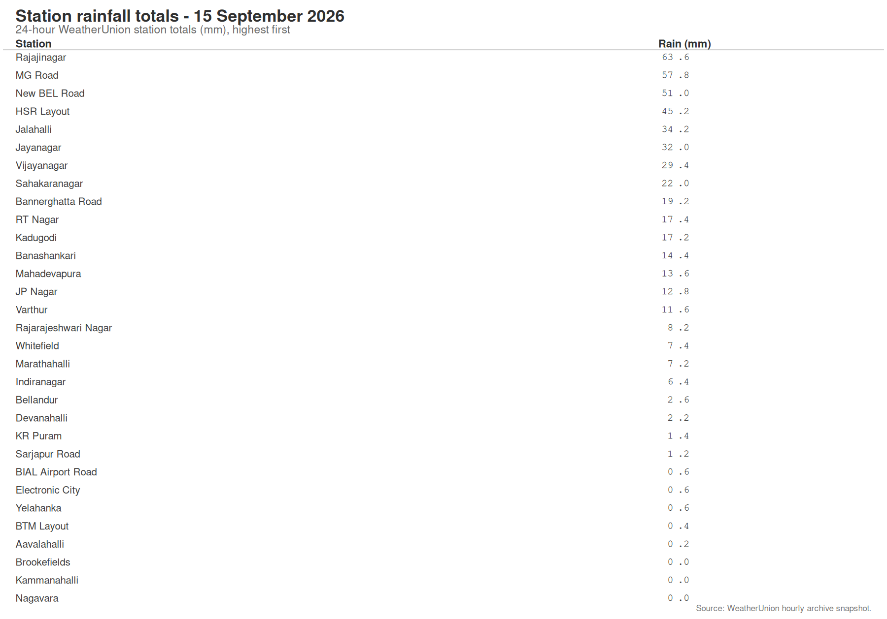
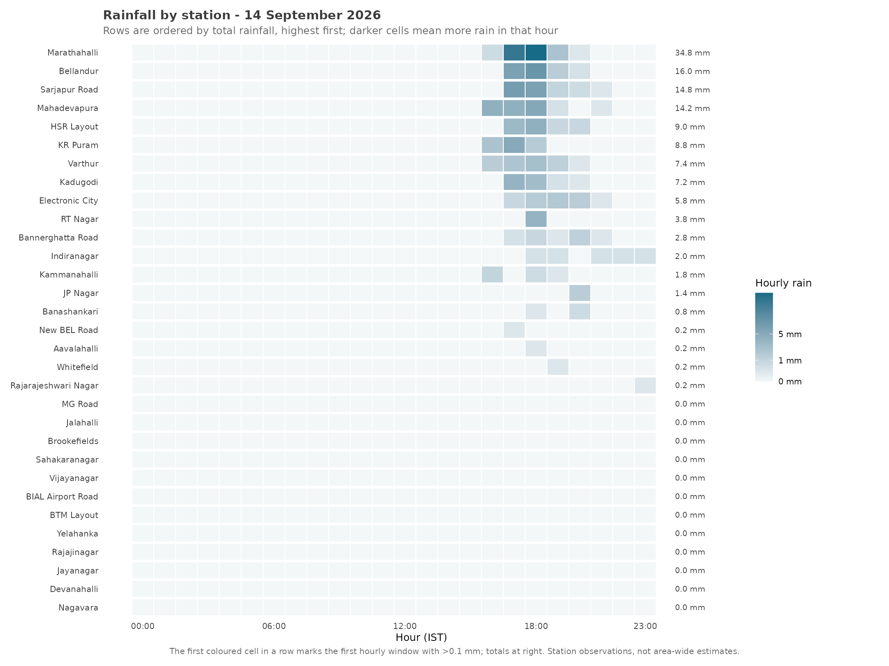
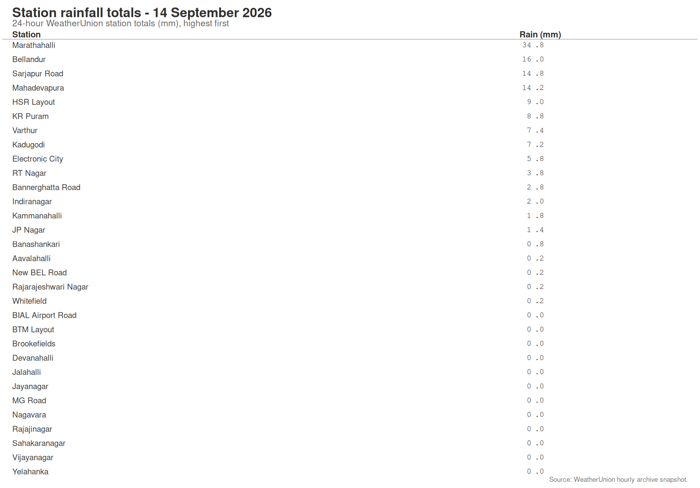

Two wet days, 31 WeatherUnion stations, and a reminder that “it rained in Bangalore” is often too vague to be useful.
This post is AI-written.
On 15 September, it rained heavily in parts of Bangalore. The usual city-level question followed: how much rain did Bangalore get?
I tried to answer a slightly different question instead: where did the rain arrive, and how much did each part of the city receive?
The answer was less like a city-wide weather report and more like a collection of neighbourhood weather reports.
Two days, two different rain maps
I used hourly observations from 31 WeatherUnion stations, covering 14 and 15 September 2026. The heatmaps below are arranged by total rainfall, highest first. Darker cells mean more rain in that hour. The first coloured cell in each row still shows the first hourly window in which that station recorded more than 0.1 mm, so timing remains visible without making it the ordering principle.

On 15 September, the biggest totals were in Rajajinagar, MG Road, New BEL Road and HSR Layout. Rajajinagar recorded 63.6 mm, while nearby-looking parts of the city were much lower. The rainfall total and the timing are both visible in the chart, but they answer different questions: how much fell, and when did this station first get wet?

The previous day looked quite different.

On 14 September, the wettest station was Marathahalli, with 34.8 mm. Bellandur recorded 16.0 mm, Sarjapur Road 14.8 mm and Mahadevapura 14.2 mm. Rain mostly began in the late afternoon, but the geography of the heavier rain was different from the following day. Several stations in the west, north and central parts of Bangalore recorded no rain at all.

This is what “hyperlocal” means here. It does not mean that every street has its own private monsoon. It means that over a few kilometres, the timing and accumulated rainfall can change enough that a city average becomes a poor description of what happened to an individual neighbourhood.
The two days also make a more important point: the spatial pattern itself moves. A map of one storm is not a map of Bangalore’s permanent wet and dry zones.
The measurement problem is part of the weather story
There are at least four ways in which Bangalore’s rain data can mislead us.
First, a station is a point, not a neighbourhood. A reading from Rajajinagar does not tell us that every part of Rajajinagar received 63.6 mm. It tells us what that station recorded. Interpolating a smooth rainfall surface over the whole city can create a level of precision the sensors do not provide.
Second, “Bangalore rainfall” has an ambiguous denominator. We could mean the average across stations, the wettest station, the rainfall at a particular official gauge, or the share of the city represented by some spatial model. These are different quantities. Adding station rainfall together would be nonsense: 63.6 mm at Rajajinagar plus 34.8 mm at Marathahalli does not mean Bangalore received 98.4 mm.
Third, temporal resolution matters. WeatherUnion’s archive stores hourly aggregates. We can say that one station’s first rainy hour was 17:00 and another’s was 20:00. We cannot say which one received the first drop, or whether the storm moved continuously from one locality to another. There may have been a lot of movement inside each one-hour box.
Fourth, coverage is uneven across variables and across time. For these two days, all 31 stations had complete hourly rainfall values. A chart can look detailed while the underlying evidence is still limited to a network of points.
This is not an argument against collecting more data. It is an argument for being precise about what the data can answer. More stations help with spatial coverage. More frequent readings help with storm timing. Consistent metadata helps us know when a sensor has moved or changed. Longer histories help separate a genuinely unusual pattern from one noisy afternoon.
It also argues for publishing uncertainty as part of the result. A good Bangalore rain report might say: “Among 31 stations, these were the observed totals; the earliest recorded rainy hour was X; and these totals describe points, not every square kilometre between them.” That is more useful than one number labelled “Bangalore rainfall” with no explanation of how it was made.
A city that needs more than one weather number
The practical consequence is slightly annoying. There may not be one correct answer to “how much did it rain in Bangalore yesterday?” There may be several correct answers, each tied to a station, a time window and a definition of the spatial area being described.
For residents, this matters because rain is experienced locally. For traffic planners, drainage engineers and emergency-response teams, it matters even more. A city-wide average can hide the exact concentration that causes waterlogging. The part of Bangalore that received 60 mm is not interchangeable with the part that received almost none.
I started this analysis looking for a neat city-wide story. What I got instead was a better, if messier, one: Bangalore’s rain often arrives in patches, and our data needs to preserve those patches rather than smooth them away.
The next useful step would be to repeat this across many rain events, not just these two days. Then we could ask which patterns recur, which are one-off storm tracks, and how much station density is needed before a “city rainfall” estimate becomes trustworthy.
Original question
Yesterday, there was fairly heavy rain in parts of Bangalore. Can you map out how the rain varied across WeatherUnion stations - where it started raining first, where it rained later, and how much fell in different parts of town?
Source: WeatherUnion hourly archive snapshot, 14-15 September 2026. Rainfall values are station observations derived from hourly accumulation changes. The charts do not interpolate rainfall between stations. Roads and map context, where used in the companion analysis, are from OpenStreetMap.